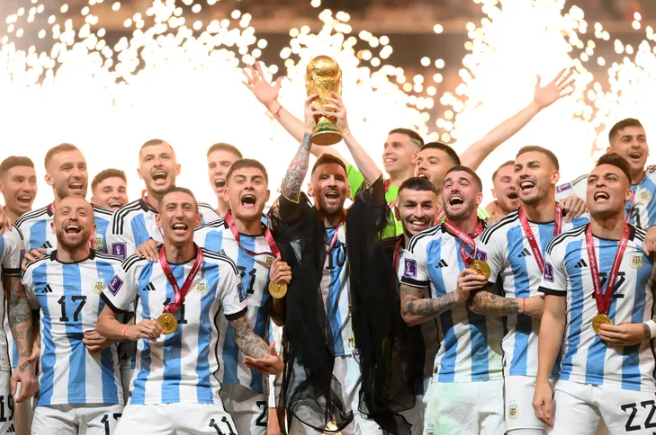

La Selección Argentina se consagró campeona del Mundial de Qatar 2022 tras vencer a Francia por penales


La Selección Argentina es campeona del Mundo! Luego de igualar 3-3 con Francia, la Albiceleste se impuso por 4-2 en la definición por penales y se quedó con la final del Mundial de Qatar 2022. Dos goles de Lionel Messi y uno de Ángel Di María para el equipo de Lionel Scaloni mientras que Kylian Mbappé anotó los tres de los galos.